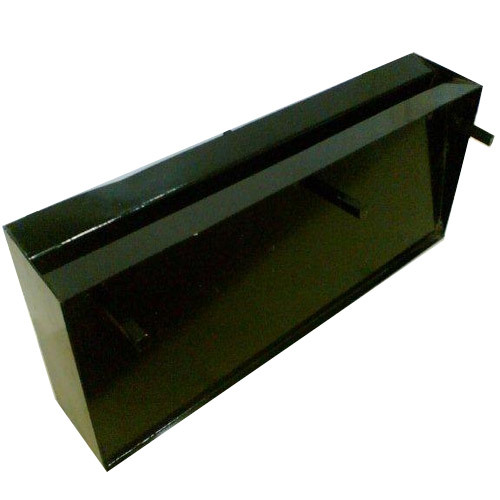

Textile Spinning Floor Grating (Floor Silt)
{kind=link}
Climate control and air changes are very sensitive parts of the spinning production. The yarn production is very much depends on climate control and air changes in the spinning hall. Floor gratings do very significant part in the controlled air changes. Gratings exclusively designed for textile purpose is not available in the market. We are the first in the market designing floor gratings for Textile industries. Our gratings have an anti-static coating, it does not need any cleaning, and remain clean, and can be installed concealed under the machines where human reach for cleaning is difficult.
Different types of floor grating
- MS Angle Fabricated single slit floor grating
- MS plate fabricated Hot dip galvanised floor grating
- MS Fabricated electro forged and Hot dip galvanised floor grating.
Generally, most of the Textile mill Humidification plant use MS plate fabricated hot dip galvanised floor grating. However all of these are general engineering purpose gratings, whereas the needs of textile spinning is entirely different, where yarn production is sensitive to climate changes.
Problems of GP Floor grating in Textile spinning
The general purpose gratings gradually choke up and affect the performance of the humidification plant. Regular slit cleaning is very tedious, labour oriented, and in practicality, cleaning is not done regularly or properly due to many reasons.
Research and design
While designing the floor grating for spinning mill we considered all the climatic conditions and physical aspects of a textile industry in to consideration.
- High humidity.
- Heavy dust and fluff in the air.
- Human behavior such as pan chewing and spitting.
- Size of the Ring frame empty cops.
- Necessary air changes in the spinning hall.
We are the first and the only company in the market designing floor gratings for Textile Spinning Mill. The exclusive design and surface treatment gives customer guaranteed trouble free service for several decades.
Application
1. Ring spinning area -
Gratings per 5 Square meters. Gratings is to be installed below the ring frame; along the length; after every 1.68 meters
2. Speed frame and Winding area -
Speed frame section and winding area 1 slit per 5 square meter area is to be maintained
3. For other areas -
Machine suction itself is sufficient to maintain the requested climatic condition.*
Advantage of our floor slit
Since our gratings have proprietary surface treatment, it does not need any cleaning and can be installed concealed under the machine even where human reach for cleaning is difficult. Therefore, the floor gratings will remain clean and choke up free forever. This will add to the better climatic condition and increase the productivity of the mill.
Labour saving
Regular floor slits coming with most of the humidification plants need regular cleaning.
Our slits are self-cleaning due to special surface treatment and exclusive design, and never attract any labour to clean the slits.
Enhanced Production
Due to sustained environmental condition in the spinning department, end break will be less and productivity will increase.
Better environment (Humidity/climate Control)
Due to sustained air changes as per the programme, spinning hall air will remain dust and fibre free, and workers will be more productive and healthy.
* Calculations are based on ring frames installed at a distance of 2.1 Meter and standard air volume of the department and pneumafil air displacement by the machines medium count cotton yarn spinning.